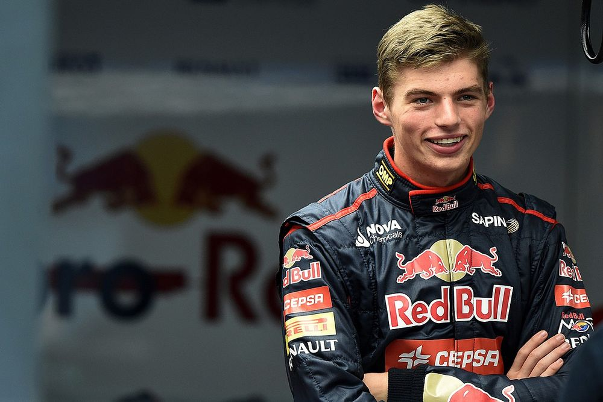
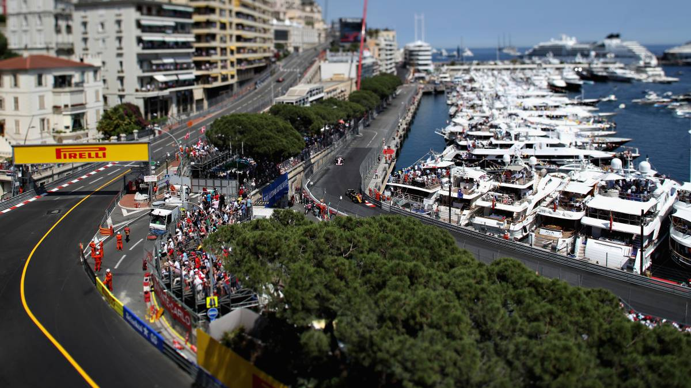
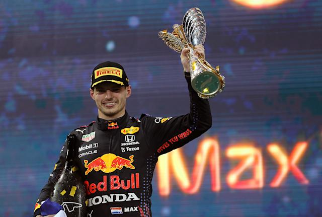

El domingo 29 de marzo de 2015, se convierte en el piloto más joven en conseguir puntos en la F1, en el Gran Premio de Malasia. Posteriormente, entre problemas de fiabilidad y algún error del piloto, no puede volver a puntuar hasta 5 carreras después.
Max Verstappen se apuntó la victoria en el Gran Premio de Mónaco de la F1 2021 en una carrera donde Mercedes y Lewis Hamilton fueron superados en la estrategia. Sergio Pérez resultó cuarto.
Max Verstappen finalmente recibió el trofeo que lo acredita como campeón de pilotos del mundial de Fórmula 1 2021. Verstappen, de 24 años de edad, venció a Lewis Hamilton en la carrera por el campeonato.
